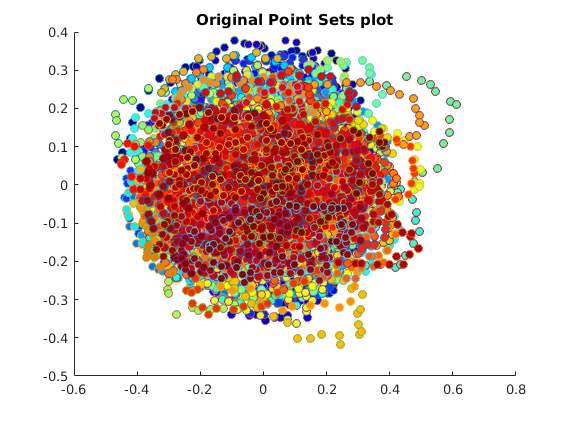
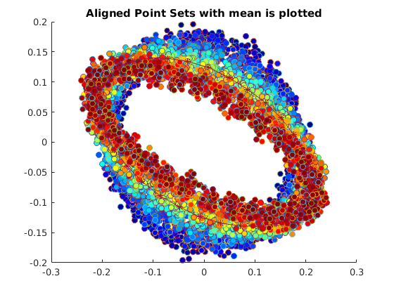
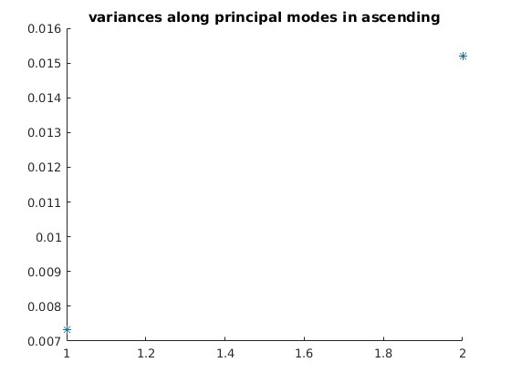
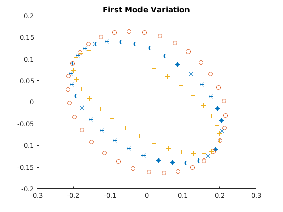
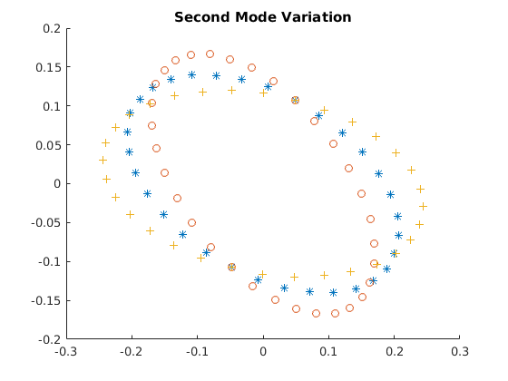

CS 736: Medical Image Processing
Question 1 Assignment 5 Praveen Agrawal 12D020030 Aditya Kumar 120050046
Contents
Loading Data
load('../Data/assignmentShapeAnalysis.mat');
Transforming to preShape
centroid = sum(pointSets,2) / numOfPoints; preShapePoints = pointSets - centroid(:, ones(1, 32), :); norms = sqrt(sum(sum(preShapePoints.^2, 2), 1)); preShapePoints = preShapePoints./norms(ones(1, 2), ones(1, 32), :);
Iterative calculation of mean shape
initialization using sample mean
mean = preShapePoints(:, :, 3); oldMean = mean + 100; % parameters for loop epsilon = 0.000001; iteration = 0; % loop while sqrt(sumsqr(mean - oldMean)) > epsilon % update in the loop oldMean = mean; iteration = iteration + 1; % for each set find the rotation matrix for i = 1 : numOfPointSets % find rotation Y = preShapePoints(:, :, i); [U, ~, V] = svd(Y * mean'); RotMatrix = V * U'; if det(RotMatrix) == -1 % correcting for negation t = [1, 0; 0, -1]; RotMatrix = V * t * U'; end preShapePoints(:, :, i) = RotMatrix * preShapePoints(:, :, i); end % mean shape calculation mean = sum(preShapePoints, 3) / numOfPointSets; % normalization of mean norm = sqrt(sumsqr(mean)); mean = mean ./ norm; end % calculation of eigen values done here CV = 0; for i = 1 : numOfPointSets CV = CV + (preShapePoints(:,:,i) - mean) * (preShapePoints(:,:,i) - mean)'; end % normalized CV = CV / numOfPointSets; [V,D] = eig(CV); eigenValues = diag(D);
calculation of modes of variation
var = zeros(size(mean, 1), size(mean, 2), 2, 2); for j = 1 : 2 for k = 1 : 2 for i = 1 : 2 sd = sqrt(eigenValues(3 - j)); mult = 1; if k == 2 mult = -1; end var(i, :, k, j) = mean(i, :) + mult * 2 * sd * V(:, 3 - j)' * mean; end end end
PLOTS
using color shceme
colors = jet(numOfPointSets);
Part(a) Intial point set
figure; hold on; title('Original Point Sets plot'); for i= 1 : numOfPointSets scatter(pointSets(1,:,i), pointSets(2,:,i), 'MarkerFaceColor', colors(i, :)); end hold off;
Part(b) Aligned point sets with mean
figure; hold on; title('Aligned Point Sets with mean is plotted'); for i=1:numOfPointSets scatter(preShapePoints(1, :, i),preShapePoints(2, :, i), 'MarkerFaceColor',colors(i, :)); end plot(mean(1,:),mean(2,:), 'Marker', '*'); hold off;
Part(c) Principal modes
figure; scatter(1 : size(eigenValues, 1), eigenValues, '*'); title('variances along principal modes in ascending');
Part(d) Plot modes of variations
plot first mode of variation
figure; title('First Mode Variation'); hold on; scatter(mean(1, :),mean(2, :),'*'); scatter(var(1, :, 1, 1), var(2, :, 1, 1),'o'); scatter(var(1, :, 2, 1), var(2, :, 2, 1),'+'); hold off; % plot second mode of variation figure; title('Second Mode Variation'); hold on; scatter(mean(1, :),mean(2, :),'*'); scatter(var(1, :, 1, 2), var(2, :, 1, 2),'o'); scatter(var(1, :, 2, 2), var(2, :, 2, 2),'+'); hold off; 